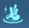

• Dominium
Les dominiums sont la monnaie speciale a Joltville, la majorite des marchandises sont achetees avec cette monnaie

• Le bazar
Les dominiums sont la monnaie speciale a Joltville, la majorite des marchandises sont achetees avec cette monnaie
Tout ce que l'on va voir par la suite se passe ici: au Thianhe Bazar.
On peut voir une multitude d'icones a l'ecran, regardons dans l'ordre:
• Le centre d'adoption des betes
C'est ici que vous pourrez revendre les betes que vous avez reussi a apprivoiser et elever au maximum.
• Le restaurant "Rosee de Jade"

Vous pourrez y acheter les resources suivantes:
Le sel ainsi que le riz ne sont pas obtenables dans la nature. Il vous faut donc en acheter quand les prix sont bas.
Les autres ressources sont ramassables dans la nature, donc pas besoin de les acheter.
• Le pavillion de l'elexir dore"

Vous pourrez y acheter les resources suivantes:

Les herbes medicinales ne sont pas obtenables dansla nature. Il vous faut donc en acheter quand les prix sont bas.
Les autres ressources (Le gimgembre et les Lingzhi) sont ramassables dans la nature, donc pas besoin de les acheter.
Les piqueres sont des buffs qui durent pour 1 semaine. Achetez donc celles qui vous conviennent quand les prix le permettent
• Le piercing shot augmente le shatter de 25% et l'aggro de 15%.
• L'enhanced blade shot (version amelioree du blade shot) augemnte l'attaque de 3.5%.
• L'enhanced shot (version amelioree du shot) augmente les statisques des armes comme si les etoiles des armes et matrices sont maximum. (ATTENTION : Ca n'augmente pas le nombre d'etoiles, faut pas abuser)
• Le Gourmet Loft

Il vend que de la nourriture, tout est optionel.
• Le hall Ruili
On y trouve uniquement des elements de cosmétiques et quelques cadeaux pour les simulacres. Achetez donc ce qu'il vous plaira: tout est optionel.
• La pharmacie He an

On y trouve principalement de la nourriture, donc c'est optionel. Il y a aussi:
Le blade shot qui augmente l'attaque de 2.5% pendant 7 jours.
• Le centre d'echange Lusterium


Les ressources sont ramassables dans la nature, donc pas besoin de les acheter.
• Maison Brocade

Seul le cocon de soie est un item disponible uniquement ici, le reste est farmable.
• L'atelier celeste


Tout y est optionel et est farmbale dans la nature
• Le trio d'amelioration

Ils permettent d'augmenter votre stuff contre des dominiums (dans une certaine limite hebdomadaire):
• Les matrices
• Les equipements titans
• Les stats aleatoires des equipements
• Voici un exemple avec les matrices